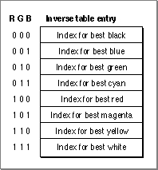
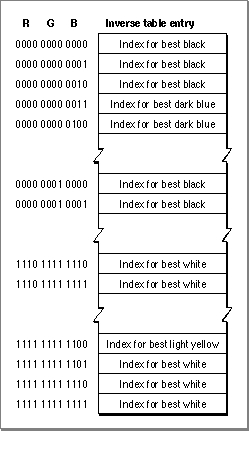
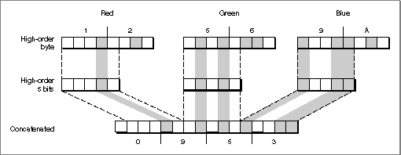

Inverse Tables
The Color Manager constructs inverse tables to remap the information in a device's color lookup table so that, when Color QuickDraw supplies a color, the Color Manager can quickly return the index to the closest color available in the CLUT.When an application sets the foreground color with the
- Note
- The material in this section is provided for developers who are planning to create their own color-mapping methods; few programs need to use inverse tables directly, and even fewer need to create their own.
RGBForeColorfunction, and then draws using that color (with aLineTofunction, for example), Color QuickDraw must determine how to deal with the 48 bits of thatRGBColordata structure. If the line is drawn into a picture, Color QuickDraw can store all 48 bits of color information along with the line-drawing codes. But when it is drawn into a pixel map, some color information must be discarded, because even the deepest pixel map can store only 24 bits of color information per pixel.Drawing into direct pixel maps, in which each pixel value directly specifies the red, green, and blue components of a color, is straightforward: Color QuickDraw truncates low-order bits from each 16-bit color component of the
RGBColordata structure. Direct pixel maps can be either 16 or 32 bits deep, with each pixel value containing 15 or 24 bits of color information (5 or 8 bits per component, with the other bits unused).Indexed pixel maps don't contain
RGBColordata structures; they contain indexes to a color table where theRGBColordata structures are stored. The color table of aGDevicedata structure reflects the current CLUT values for that device. When an application requests a color for an indexed device, Color QuickDraw calls on the Color Manager to determine which color currently in theGDevicedata structure's color table (and hence the device's CLUT) comes closest to the requested color. The Color Manager functionColor2Indexreturns the index for a given color, and Color QuickDraw stores that index in the pixel map. Indexed pixel maps can be 1, 2, 4, or 8 bits deep. (A 1-bit pixel map is effectively the same as a bitmap.) The most common device CLUT has 256 entries, each of which can be addressed by a pixel map that is 8 bits deep.Determining the best color choice out of 256 candidates can take a lot of processing time. To speed up processing, the Color Manager builds an inverse table for every indexed device that the Slot Manager finds at startup. The Color Manager stores a handle to the inverse table in the
gdITablefield of theGDevicedata structure. An inverse table organizes the information in a device's CLUT so that, given anRGBColordata structure, the index to the best color can be found quickly. Its format is the inverse of a color table: instead of a collection ofRGBColordata structures that can be looked up by an index, the inverse table contains a collection of color table indexes that can be looked up by an RGB color value.The format of an inverse table can be illustrated compactly with a hypothetical color world in which red, green, and blue components are only 1 bit deep each. Shown in Figure 7-1, the eight possible RGB color values of such a world are the indexes into a table whose entries consist of indexes to the best colors in the CLUT for that RGB color value.
Figure 7-1 Sample inverse table

In the Color QuickDraw world, inverse tables may use 3, 4, or 5 bits for each color component. The number of bits used is called the resolution of the inverse table. The size of the table depends on its resolution; the table must be large enough to accommodate every color combination at a given resolution. For example, the number of combinations in a table of resolution 3 is 512, so an inverse table of resolution 3 has 512 entries, of one byte each. (Here's how to calculate the 512: there are 3 bits each for red, green, and blue, totaling 9 bits, the permutations of which are 29 or 512.) Tables of resolution 4 and 5 occupy approximately 4 KB and 32 KB, respectively.The format of an inverse table follows.
struct ITab { long iTabSeed; /* copy of color table seed */ short iTabRes; /* resolution of table: 3, 4, or 5 */ unsigned chariTTable[1]; /* byte-length color */ /* table index values */ }; typedef struct ITab ITab;The first entry of the
- WARNING
- Because the format of inverse tables is subject to change in the future, or may not be present on certain devices, applications should not assume the structure of the inverse table's data.
iTabTablearray, at location 0 (red, green, and blue values of 0000, 0000, 0000 in a table of resolution 4) contains the index to black or the nearest color to it in the CLUT. Similarly, the last entry in a table of resolution 4, at location 4095 (1111, 1111, 1111), contains the CLUT index to white.Since the largest CLUT has only 256 entries, many inverse table entries contain duplicates of other entries. For example, in an inverse table of resolution 4, the first several entries may all point to the index for black, the last few entries may all point to the index for white, and even various entries in the middle may point to white or black, as illustrated in Figure 7-2.
Figure 7-2 An inverse table of resolution 4

- Note
- Finding indexes by means of inverse tables is the Color Manager's default method for color mapping. Applications with special color processing requirements may need to override the code for inverse table mapping with custom functions that have special mapping rules.
Inverse Tables in Action
When Color QuickDraw supplies a color, the Color Manager truncates the red, green, and blue values to the size of the table resolution, and concatenates the results to form an index into the table. At that location, the Color Manager, when it built the inverse table, stored the index to the best-mapping color in the CLUT.Table 7-1 shows two indexes into two inverse tables, one of resolution 4, the other of resolution 5, when the
Color2Indexfunction is given a color of 0x123456789ABC:The Color Manager derived the 4-bit index by taking the top 4 bits of each color component. The 5-bit index is more subtle. Figure 7-3 illustrates the steps of truncation and concatenation that result in the value 0x0953.
Figure 7-3 Creating an inverse table index

The Color Manager truncates the high-order 8 bits of each color component to the high-order 5 bits, and then concatenates those 15 bits. The resulting value, 0x0953 in hexadecimal, is the index into the inverse table.Hidden Colors
Colors that are close in the red, green, and blue color space can become hidden when they differ only in low-order bits that weren't used to construct the inverse table index. For example, even if the CLUT were loaded with 256 levels of gray, a 4-bit inverse table can only discriminate among 16 of the levels. (In the 4096 permutations there are only 16 places where the red, green, and blue values are equal.)To solve this problem, inverse tables carry additional information about how to find colors that differ only in the less significant bits. (The information is kept private to the Color Manager.) As a result, when the
Color2Indexfunction is called, it can find the best color to the full 48-bit resolution available in aColorSpecdata structure. Since examining the extra information takes time, certain parts of Color QuickDraw, notably the arithmetic transfer modes, don't use this information and hence won't find the hidden colors.Building Inverse Tables
The Color Manager builds an inverse table for each graphics device at startup. The data in inverse tables remains valid as long as the CLUT from which it was built remains unchanged.The Color Manager rebuilds a table whenever Color QuickDraw, the Color Picker Manager, or the Palette Manager requests colors from a graphics device whose CLUT has changed. To determine whether an inverse table has been changed, the Color Manager compares the
ctSeedfield of the currentGDevicedata structure's color table against theiTabSeedfield of that graphics device's inverse table. Each function that modifies theColorTabledata structure (with the exception of theRestoreEntriesfunction) increments the value in itsctSeedfield. IfctSeedandiTabSeeddon't match, the Color Manager invalidates the inverse table and rebuilds it.If your application modifies a color table entry directly (which is not recommended), it should call the
- Note
- Under normal circumstances, your application does not know when the Color Manager has invalidated an inverse table. The method of invalidation is the same as the one that Color QuickDraw uses to invalidate expanded patterns and cursors.
CTabChangedfunction, described in the chapter "Color QuickDraw" in Inside Macintosh: Imaging With QuickDraw. For theColorTablerecord you specify in thectabparameter, theCTabChangedprocedure calls the Color Manager functionGetCTSeedto get a new seed (that is, a new, unique identifier in thectSeedfield of theColorTablerecord) and notifies Color QuickDraw of the change.The Color Manager builds or rebuilds an inverse table in the following manner:
The Color Manager builds an inverse table with the
- It builds a table of all possible RGB color values taken 3, 4, or 5 bits at a time.
- For each position in the table, it attempts to find the closest match.
- It adds information to get a better resolution.
MakeITablefunction, which supports only 3-bit, 4-bit, and 5-bit resolution. (Five bits is the maximum resolution, because the indexes into a 6-bit table would have to be 18 bits long, more than a full word.) In most cases, when your application sets colors in a graphics port using theRGBForeColorandRGBBackColorfunctions or usesCopyBitsto transfer pixel maps, inverse tables of 4 bits, the default, are sufficient. If you use arithmetic transfer modes with color tables that have closely spaced colors, the screen appearance may be improved by specifying inverse tables at 5-bit resolution, which may uncover some hidden colors.